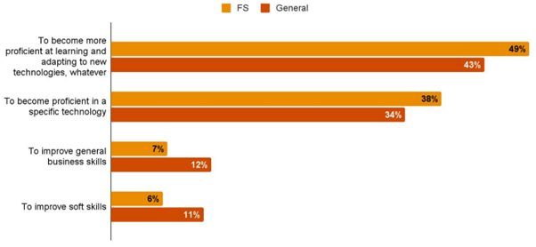
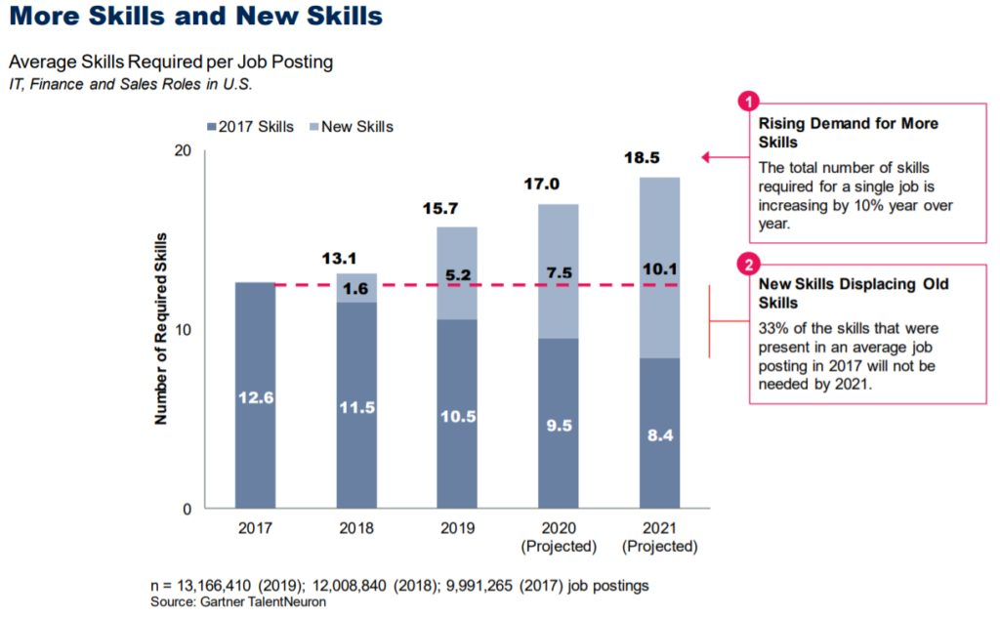

“The most powerful asset that businesses hold has changed. Data now underpins success in mining both physical assets and digital business opportunities—improving accuracy, increasing efficiency, and augmenting the ability of the workforce to deliver greater value.” (source)
According to Accenture’s Workforce 2025 report, the Financial Services sector could improve productivity gains by $140 billion by adopting new technologies to increase workforce efficiency. This is just one of many cases for businesses in this industry to become more data literate. In a recent study by PwC Vietnam, when asked what type of workplace skills they would most like to develop, 49% of respondents who work in Financial Services said they wanted to become more proficient in new technologies, with 38% wanting to be proficient in a specific technology. Just 7% said that they wanted to improve their general business skills, while only 6% cited soft skills as an area for development.

Major skills gap in data literacy
With so much knowledge and training available on data literacy in 2021, businesses should be empowering their workforce to become Data Citizens and focus on employee upskilling as a strategic priority. Yet a recent report by Gartner claims that there is a critical skills gap in data literacy within the Financial Services sector, potentially costing a business 1% of its revenue as a result. The report also cites lack of familiarity with RPA (Robotic Process Automation), artificial intelligence and machine learning as another skills gap to be that needs to be imminently addressed.
It’s a common question: ‘Why can’t data interpretation & analysis sit with the Data Scientists? They’re the only ones who really need to know this stuff!’ Well, that’s not technically true. There is a pressing need for data literacy to sit horizontally across multiple job roles in an organisation, rather than a vertical, top-down structure where only few have the right capabilities. This need has also been justified for some time – we all remember the JP Morgan scandal that cost the company $6 billion due to a spreadsheet error!
There is no suggestion that incidents such as these have resulted in a need for companies to train an workforce to become Data Scientists; rather, they should focus on empowering workers to become Data Citizens – software power users who can undertake moderate analysis but do not replace Data Scientists. With the advancement of BI tools and technology, access to data and the power of data knowledge is no longer in the hands of few – everyone can be part of the data conversation.
Use cases in the Financial Services sector
Correct adoption and implementation of data literacy training can prevent many headaches for Financial Services businesses in a variety of ways, including cost saving through automation, increased buy in from company stakeholders, improved business insights and better strategic alignment between departments. It is also critical for skills to develop internally so businesses can stay current; see below where 33% of skills that were necessary in job roles within Finance, IT and Technology 4 years ago are no longer relevant in 2021.

Data Theory
How we acquire, store and manipulate data is constantly changing and so is the expectation of businesses to build more robust processes and capabilities around it. This is especially true in Financial Services as it is highly regulated. However, many organisations lack focus on Data Theory as a subject itself and jump straight into the various tools and technologies available. It’s pertinent for businesses to employ a more strategic view of data literacy; this includes understanding fundamental concepts such as visual data thinking, ethics, bias & risk, and data security. Technical capabilities that are not backed up with strong foundational training can be dangerous. Effective data manipulation and analysis is based on long-standing knowledge and critical thinking principles that will outlast any tool” – Kubicle’s Head of Content, Carlos Quinn.
Having a fundamental understanding of data theory can also improve planning and reduce risk by implementing best practice training, as well as encouraging both mid-senior level management to develop a more strategic mindset around data. It also acts as a strong foundation for any business’s data strategy.
Microsoft Excel
Conducting analysis on spreadsheets is one of the most common activities in business, particularly in the Financial Services sector which is highly data driven by nature. However, it has also been reported that more than 90% of spreadsheets contain errors, and many who use Microsoft Excel are untrained, seeing data simply ‘as an afterthought’ which results in common misuse of the software. Organisations that provide company wide access to structured learning around effective use of spreadsheets can help to prevent costly errors from occurring and encourage more ad hoc analysis if workers have improved confidence when using software such as Excel. This in turn will naturally boost morale.
Power BI
When it comes to data preparation and visualization, companies in the Financial Services sector that adopt tools such as Power BI can obtain crucial insights in a time effective manner. For example, insurance companies can build reports and visualizations around premium KPIs and underwriting, while offering central access to these reports internally and move away from siloed reporting. Similarly, banks and other financial institutions can build informative dashboards and metrics around loan processing and quality check logs – crucial insights that can be easily developed by Analysts, Managers, and other stakeholders in the organisation that don’t formally sit within the data analytics team.
RPA (Robotic Process Automation)
RPA has become something of a buzz word in recent times. According to a report by Gartner it is the fastest growing segment of the global enterprise software market, with UiPath taking the highest share of the market (13.6%). Some of the most obvious benefits of adopting RPA within an organisation involve increased productivity, error reduction, enhanced reporting and better security.
Some of the best use cases of RPA (and more specifically UiPath) include businesses operating in Financial Services. In Banking for instance, virtual channels are replacing human activities, which has resulted in AI models being used to ensure a seamless customer service experience. Insurance companies can also avail of RPA for claims verification which is otherwise a very complex and manual process. RPA also automates data collection processes which saves a lot of time in underwriting. Using RPA for regulatory compliance around audit trails and documentation also removes a lot of manual tasks and reduces the likelihood of errors occurring. For Accounting firms, they can use UiPath to automate invoice processing for clients, as well reducing inventory turnover and preventing delays in accounts payable/receivable.
Python
Although often seen as a tool exclusively for developers, Python is becoming more prevalent among Analysts in Financial Services. Since 2018, the number of finance-related jobs mentioning Python has almost tripled and many Banks and Auditing firms are now offering coding classes to their workforce as part of ongoing L&D. Economists are using Python more often to make calculations and Finance companies such as Stripe use it to build payment solutions and online banking platforms. Even some Wealth Management companies are using Python to simplify issues regarding investment portfolios.
One huge advantage of businesses adopting Python internally is the fact that it is quite an easy programming language to understand. This makes it more appealing for workers to engage in learning, particularly if they don’t have a background in coding.
Conclusion
We know there is no shortage of data literacy tools available for Financial Services firms, just as there is no shortage of reasons why upskilling workers in data literacy is a strategy to consider. Kubicle offers customized data literacy training on the above-mentioned subjects (plus many more) for businesses, particularly those in the Financial and Professional Services sectors. We help these businesses to develop tailored learning plans for their workforce, empowering them become Data Citizens and thrive in a continuously data driven world.